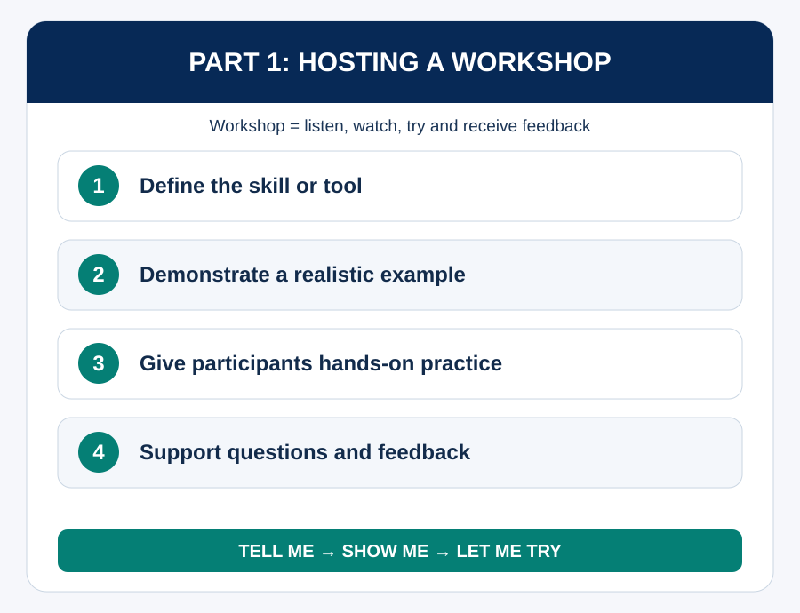
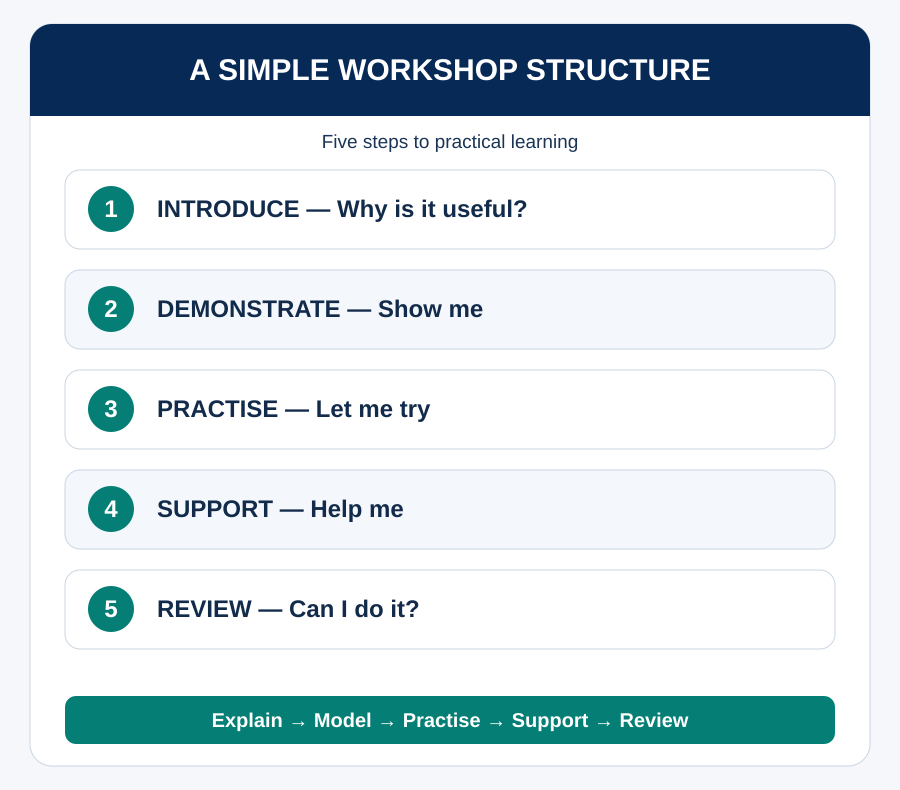

Purpose of Session
The purpose of this session is to help you develop the skills to plan and facilitate practical, engaging workshops that support workplace learning. You will learn how to create learning opportunities for others by combining sound methodology, social learning, structured facilitation and hands-on practice.
Learning Outcomes
- Explain why workplace learning and a learning community are important.
- Describe what a workshop is and how it differs from a presentation.
- Apply methodology, the Zone of Proximal Development (ZPD), DML and social learning when planning a workshop.
- Construct a short workshop plan, including preparation, resources and a practical activity.
Time allocation: 60 minutes
Activities: 3.1 Why workplace learning matters; 3.2 Workshop or presentation?; 3.3 Match the methodology; 3.4 Build a workshop plan; 3.5 Facilitate a learning moment.
Think about a tool, method or process you have recently learned. If you had to help another intern use it by Friday, how would you teach it? What would they need to know, see and try for themselves?
Part 1: Why Workplace Learning Matters
Workplace learning is important because tools, systems and ways of working change quickly. In most workplaces, people do not learn only through formal courses. They also learn by observing others, asking questions, experimenting, receiving feedback and sharing practice. A learning culture helps people solve problems together, transfer knowledge and adapt to new demands.
Creating a learning community means encouraging curiosity, psychological safety and knowledge-sharing. People should feel comfortable asking for help, testing ideas and learning from each other. Workshops are one practical way to support this culture.
Why workplace learning matters
In pairs, identify two reasons why workplace learning is important and one thing that helps create a culture of learning. Share one idea with the group.
Part 2: What Is a Workshop?
A workshop is a short peer-learning session where you teach other people a useful skill, method, process or tool. It helps participants understand, observe and practise something they can use. Workshops are therefore more active and practical than presentations.
A presentation mainly asks people to listen. A workshop asks them to listen, watch, try, ask questions and receive feedback. Show broader applications across research, AI, software development, UI/UX, business, project management and productivity.

Workshop or presentation?
Decide whether each example should be a presentation, a workshop, or a presentation followed by a workshop. Briefly explain why.
Part 3: Methodology, ZPD, DML and Social Learning
Good workshops are intentionally designed. Start with what participants should be able to do by the end (backward design), then choose a suitable methodology. A demonstration followed by guided practice may suit a software task; think-pair-share may suit idea generation or reflection.
The Zone of Proximal Development (ZPD) reminds us that learners can often do more with guidance than independently. Scaffold learning: explain the task, model it, support participants while they try, and gradually reduce support.
Social learning means learning through observation, participation, modelling and interaction. Encourage participants to watch peers, discuss choices and share solutions. DML should inform how learning is structured, tasks sequenced and practice included. Participants should leave having tried the skill, not only heard about it.
Match the methodology
Choose one workplace skill you might teach and decide which methodology would suit it best.
Part 4: Weekly Preparation and Workshop Planning

At the beginning of the week, present a 10-minute preview in a formal slide presentation. Introduce the upcoming tool, explain why it is useful, outline learning outcomes and mention preparation. Record the preview so colleagues can decide whether to attend Friday’s session.
If a tool is particularly relevant to one project team, that team should spend about one hour exploring advanced features, use cases and tutorials to support the workshop. Upload slides, tutorial links, example files, cheat sheets and practice exercises to OneDrive. Schedule the workshop in the ClickUp Workshops space and the General Teams channel.
A standard structure includes introduction, demonstration, tutorials and learning resources, hands-on activity and wrap-up. Include breaks if the workshop is longer than one hour. Show broad applications, include examples across disciplines, finish with practical work, share certification opportunities when available, and send login/setup instructions early.
Build a workshop plan
Sketch a short workshop plan for a beginner audience.
Part 5: Presenting and Facilitating the Workshop
Move participants from passive listeners to active learners. Introduce the tool and explain why it matters; demonstrate a realistic example; let participants try; support their practice; answer questions; and review whether they can perform the task.
Good facilitation includes clear instructions, active participation, time management, encouragement and responsive support. Ask open-ended questions, keep slides clear, avoid overloading people with information and act as a guide rather than the centre of attention.
Facilitate a learning moment
In pairs, facilitate a 2–3 minute micro-teaching moment on a simple task. One person teaches; the other participates and gives feedback.
Workshop Checklist and ePortfolio Reflection
Workshop Checklist
Reflection — Add to Your Internship ePortfolio
Recommended Readings and References
Continue to Hosting Journal Clubs.